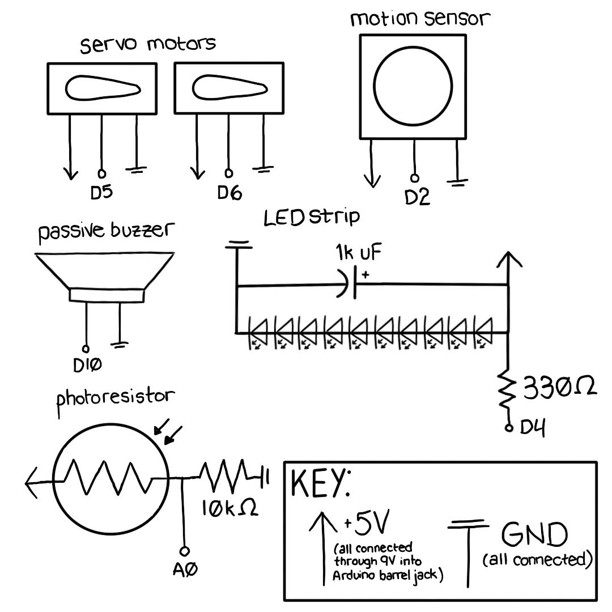
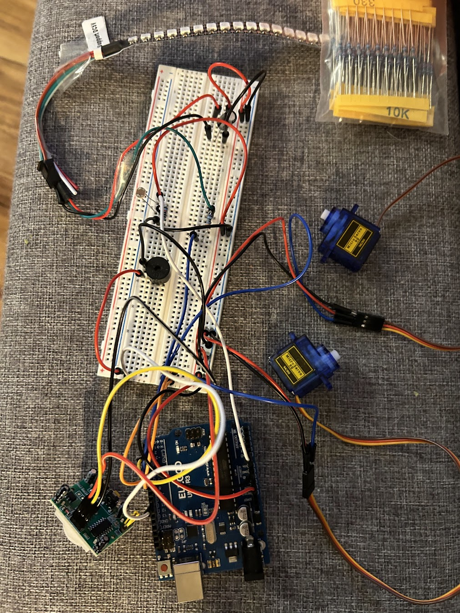
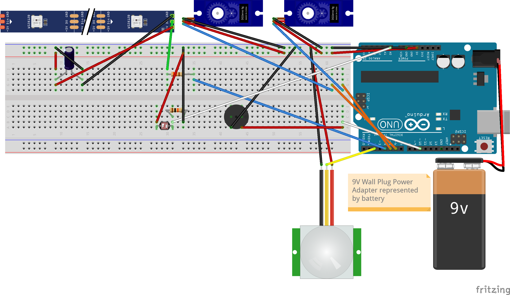
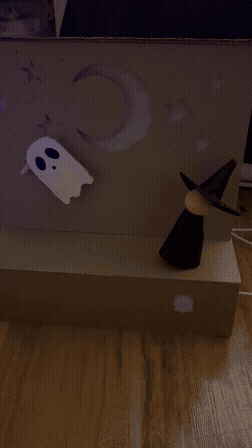

Here is all the documentation for my Final Project: Spooky Diorama!
The prompt is to use our cumulative knowledge from the quarter to create a product with some input that connects to some output through digital logic. The product needs to be integrated into a prototype, rather than just be a breadboard on the table!
The proposal for my project is available here on my site, but here's an overview:

All components are connected to the same ground, and all except the passive buzzer are connected to 5V through the Arduino, which is connected to 9V through its barrel jack.


A couple notes:
While the photoresistor was left in the dark circuit compartment, I decided to leave it in the circuit in case I was able to solder it later, since it barely draws current and doesn't interfere with the rest of the circuit as is.
The current output for the 9V power supply I used is 1000mA. I knew I'd be pushing this limit, so I calculated the max current draw of my circuit (I only plan on plugging it in for ~30s at a time, so some exceedance should be okay).
Adding all of these max current draws together, I get ~1776mA, which is over the 1000mA limit of my power supply. However, in practice, the servo motors will rarely be at stall current, and the LEDs will be fading on/off. I expect the real current draw to be closer to ~1200mA, which is still high but should be okay for short periods of time. (I also made sure to monitor the temperature of the components while testing! But I'd never do this again. 😅) However, if I have the time to change this, I'll definitely add the 12V/2A power supply dedicated to the servo motors. In the meantime, the only issue I experienced was some jittery movement in the servo motors when the LED strip was at full brightness, which isn't ideal, but manageable for testing/presenting.
// Final project: Spooky Diorama!
// By Jordyn Padzensky
// Passive buzzer song and pitch library from https://github.com/hibit-dev/buzzer/tree/master
// ~~~~~~~~~~~~~~~~~~~~ Variables & setup for motion sensor ~~~~~~~~~~~~~~~~~~~~ //
const int mSensorPin = 2; // Arduino pin connected to output pin of sensor (unchanging)
int currMSensor = LOW; // current state of pin
int prevMSensor = LOW; // previous state of pin
// ~~~~~~~~~~~~~~~~~~~~ Variables & setup for servo motors ~~~~~~~~~~~~~~~~~~~~ //
#include <Servo.h> // include servo library
Servo servo1; // create and define servo object 1
const int servo1Pin = 5; // Arduino pin connected to Signal pin of servo motor 1
const int servo1Max = 90; // Max angle for servo motor 1 when on (0-180)
const int servo1Min = 0; // Min angle for servo motor 1 when on (0-180)
const int servo1Speed = 30; // Duration of pause between servo 1 movements
int servo1Pos = 0; // Track position of servo 1
int servo1Dir = 1; // Track direction of servo 1 (+/- 1)
uint32_t lastServo1Move = 0; // Track time of last servo 1 movement
Servo servo2; // create and define servo object 2
const int servo2Pin = 6; // Arduino pin connected to Signal pin of servo motor 2
const int servo2Max = 120; // Max angle for servo motor 2 when on (0-180)
const int servo2Min = 60; // Min angle for servo motor 2 when on (0-180)
const int servo2Speed = 30; // Duration of pause between servo 2 movements
int servo2Pos = 0; // Track position of servo 2
int servo2Dir = 1; // Track direction of servo 2 (+/- 1)
uint32_t lastServo2Move = 0; // Track time of last servo 2 movement
// ~~~~~~~~~~~~~~~~~~~~ Variables & setup for multicolor LED strip ~~~~~~~~~~~~~~~~~~~~ //
#include <Adafruit_NeoPixel.h> // include Adafruit Neopixel library
#define PIN_WS2812B 4 // Arduino pin that connects to WS2812B
#define NUM_PIXELS 10 // The number of LEDs (pixels) on WS2812B
#define DELAY_INTERVAL 250 // 250ms pause between each pixel
Adafruit_NeoPixel WS2812B(NUM_PIXELS, PIN_WS2812B, NEO_GRB + NEO_KHZ800);
const int fadeSpeed = 100; // set delay between pixel changes
int pixelPos = 0; // track pixel position
int fadeDir = 1; // track direction of pixel fading (+/- 1)
uint32_t lastLEDUpdate = 0; // track time of last LED update
// ~~~~~~~~~~~~~~~~~~~~ Variables & setup for passive buzzer ~~~~~~~~~~~~~~~~~~~~ //
#include <pitches.h> // include pitches library
const int bPin = 10; // Arduino pin connected to passive buzzer (unchanging)
// store notes for melody in array
int melody[] = {
NOTE_C4, NOTE_C4,
NOTE_G4, NOTE_G4,
NOTE_D4, NOTE_C4,
NOTE_B4,
NOTE_C4, NOTE_D4,
NOTE_G4, NOTE_G4, NOTE_G4, NOTE_G4, NOTE_G4, NOTE_GS4, NOTE_F4, NOTE_F4,
NOTE_F4, NOTE_F4, NOTE_F4, NOTE_F4, NOTE_F4, NOTE_F4, NOTE_F4, NOTE_G4, NOTE_GS4, NOTE_G4,
NOTE_G4, NOTE_G4, NOTE_G4, NOTE_G4, NOTE_A4, NOTE_AS4, NOTE_A4, NOTE_G4, NOTE_F4,
NOTE_F4, NOTE_F4, NOTE_F4, NOTE_G4, NOTE_GS4, NOTE_G4, NOTE_DS4, NOTE_D4, NOTE_G4,
NOTE_AS4, NOTE_AS4, NOTE_AS4, NOTE_A4, NOTE_G4, NOTE_AS4, NOTE_AS4, NOTE_AS4, NOTE_A4, NOTE_G4,
NOTE_AS4, NOTE_F4, NOTE_F4, NOTE_DS4, NOTE_D4, NOTE_C4, NOTE_G4, NOTE_A4,
NOTE_B4, NOTE_B4, NOTE_B4, NOTE_AS4, NOTE_GS4, NOTE_B4, NOTE_B4, NOTE_B4, NOTE_B4, NOTE_B4, NOTE_AS4, NOTE_GS4,
NOTE_B4, NOTE_G4, NOTE_G4, NOTE_FS4, NOTE_E4, NOTE_CS4, NOTE_CS4, NOTE_GS4, NOTE_GS4, NOTE_GS4, NOTE_GS4, NOTE_GS4,
NOTE_FS4, NOTE_FS4, NOTE_G4, NOTE_FS4, NOTE_FS4, NOTE_FS4, NOTE_FS4, NOTE_G4, NOTE_FS4,
NOTE_A3, NOTE_F4, NOTE_F4, NOTE_A3, NOTE_GS3, NOTE_A3, NOTE_B3, NOTE_CS4,
NOTE_FS4, NOTE_FS4, NOTE_FS4, NOTE_FS4, NOTE_FS4, NOTE_FS4, NOTE_FS4, NOTE_FS4, NOTE_FS4, NOTE_FS4,
NOTE_A4, NOTE_A4, NOTE_A4, NOTE_A4, NOTE_GS4, NOTE_GS4, NOTE_GS4, NOTE_GS4,
NOTE_FS4, NOTE_FS4, NOTE_FS4, NOTE_FS4, NOTE_FS4, NOTE_FS4, NOTE_FS4, NOTE_FS4, NOTE_FS4, NOTE_FS4,
NOTE_A4, NOTE_A4, NOTE_A4, NOTE_A4, NOTE_A4, NOTE_FS4, NOTE_FS4, NOTE_FS4, NOTE_FS4, NOTE_FS4,
NOTE_DS4, NOTE_DS4, NOTE_DS4, NOTE_D4, NOTE_C4, NOTE_DS4, NOTE_DS4, NOTE_DS4, NOTE_D4, NOTE_C4,
NOTE_B4, NOTE_AS4, NOTE_GS4, NOTE_B4, NOTE_AS4, NOTE_GS4, NOTE_GS4, NOTE_G4, NOTE_F4, NOTE_GS4, NOTE_G4, NOTE_F4,
NOTE_F4, REST, REST
};
// store duration of notes in array
int durations[] = {
2, 2,
2, 2,
2, 2,
1,
2, 2,
8, 8, 8, 8, 16, 16, 8, 4,
16, 16, 8, 16, 16, 8, 16, 16, 8, 4,
8, 8, 8, 16, 16, 8, 16, 16, 4,
8, 8, 16, 16, 8, 8, 8, 8, 8,
8, 8, 16, 16, 8, 8, 8, 16, 16, 8,
8, 8, 8, 16, 16, 8, 8, 4,
8, 8, 16, 16, 8, 16, 16, 16, 16, 16, 16, 8,
8, 8, 8, 16, 16, 16, 16, 16, 16, 16, 16, 8,
8, 8, 4, 16, 16, 16, 16, 8, 8,
8, 8, 8, 8, 8, 16, 16, 4,
8, 16, 16, 8, 16, 16, 16, 16, 8, 4,
8, 8, 8, 8, 8, 16, 16, 4,
8, 16, 16, 8, 16, 16, 16, 16, 8, 4,
16, 16, 8, 8, 8, 16, 16, 16, 16, 4,
8, 8, 16, 16, 8, 8, 8, 16, 16, 8,
16, 16, 8, 16, 16, 8, 16, 16, 8, 16, 16, 8,
4, 4, 2
};
// Note: tone() function uses one of the built in timers on the Arduino's micro-contoller and works independently of the delay() function.
// Use of the tone() will interfere with PWM output on pins 3 and 11
int sizeOfSong = sizeof(durations)/sizeof(int); // calculate and store size of song
int noteIndex = 0; // track note index
uint32_t noteStartTime = 0; // track note start time
bool songFinished = false; // track whether song is completed
// ~~~~~~~~~~~~~~~~~~~~ Variables & setup for photoresistor ~~~~~~~~~~~~~~~~~~~~ //
const int PRthresh = 500; // threshold between night/day settings
const uint8_t PRPin = A0; // Arduino pin attached to photoresistor
void setup() {
Serial.begin(9600); // initialize serial
pinMode(mSensorPin, INPUT); // set motion sensor pin to input mode to read value from motion sensor
servo1.attach(servo1Pin); // set servo 1 signal pin
servo2.attach(servo2Pin); // set servo 2 signal pin
WS2812B.begin(); // initialize WS2812B multicolor LED strip
pinMode(bPin, OUTPUT); // set passive buzzer pin to output mode to send PWM values
}
void loop() {
prevMSensor = currMSensor; // store motion sensor old state
currMSensor = digitalRead(mSensorPin); // read motion sensor new state
// Read and store brightness from photoresistor (no longer using for now)
int analogBrightness = analogRead(PRPin);
Serial.print("Analog brightness: "); // print value to serial monitor for tracking and debugging
Serial.println(analogBrightness);
// Run when motion is detected
if (currMSensor == HIGH) {
// Run all parts continuously while song is playing
while (!songFinished) {
Serial.println("Running diorama!");
playSong();
moveServo1();
moveServo2();
lightUp(analogBrightness);
}
// Turn off all parts when song is done
if (songFinished) {
// reset diorama
Serial.println("Ending scene!");
// reset LED strip
lastLEDUpdate = millis();
pixelPos = 0;
fadeDir = 1;
WS2812B.clear(); // turn all pixels off
WS2812B.show(); // send the updated pixel colors to the WS2812B hardware.
// reset song
noteIndex = 0;
songFinished = false;
noteStartTime = millis();
// reset servos
servo1Pos = servo1Min;
servo1Dir = 1;
lastServo1Move = millis();
servo2Pos = servo2Min;
servo2Dir = 1;
lastServo2Move = millis();
}
}
}
// function to turn on LED strip according to reading from photoresistor
void lightUp(int analogBrightness) {
uint32_t now = millis(); // track starting time
// use fadeSpeed to update LED strip after set duration
if (now - lastLEDUpdate >= fadeSpeed) {
pixelPos += fadeDir; // adjust pixel position by fading direction (+/-1)
// if the pixel position reaches the max or min, flip the fading direction
if (pixelPos >= NUM_PIXELS) {
fadeDir = -1;
}
if (pixelPos <= 0) {
fadeDir = 1;
}
// if fade direction is negative, turn off pixel
// if fade direction is positive, turn on pixel based on photoresistor reading
// if brightness is at or below threshold, set pixel color to purple
// if brightness is above threshold, set pixel color to green
if (fadeDir < 0) {
WS2812B.setPixelColor(pixelPos, WS2812B.Color(0,0,0)); // turn off pixel
} else if (analogBrightness <= PRthresh && fadeDir > 0) {
Serial.println("It's dark in here!"); // print message to serial for tracking and debugging
WS2812B.setPixelColor(pixelPos, WS2812B.Color(148,0,211)); // set pixel color to purple
} else if (analogBrightness > PRthresh && fadeDir > 0) {
Serial.println("It's bright in here!"); // print message to serial for tracking and debugging
WS2812B.setPixelColor(pixelPos, WS2812B.Color(255,255,255)); // set pixel color to white
}
WS2812B.show(); // send updated pixel color to LED strip
lastLEDUpdate = now; // update time of last LED update
}
}
// function to move servo 1
void moveServo1() {
uint32_t now = millis(); // track starting time
// use servo1Speed to move servo 1 after set duration
if (now - lastServo1Move >= servo1Speed) {
servo1Pos += servo1Dir; // adjust position by direction (+/-1)
// if the servo reaches a max or min, flip the direction
if (servo1Pos >= servo1Max) {
servo1Dir = -1;
}
if (servo1Pos <= servo1Min) {
servo1Dir = 1;
}
servo1.write(servo1Pos); // move servo 1!
lastServo1Move = now; // update time of last movement
}
}
// function to move servo 2
void moveServo2() {
uint32_t now = millis(); // track starting time
// use servo2Speed to move servo 2 after set duration
if (now - lastServo2Move >= servo2Speed) {
servo2Pos += servo2Dir; // adjust position by direction (+/-1)
// if the servo reaches a max or min, flip the direction
if (servo2Pos >= servo2Max) {
servo2Dir = -1;
}
if (servo2Pos <= servo2Min) {
servo2Dir = 1;
}
servo2.write(servo2Pos); // move servo 2!
lastServo2Move = now; // update time of last movement
}
}
// function to play song on passive buzzer
void playSong() {
if (songFinished) return; // end function if song is finished
uint32_t now = millis(); // track starting time
int duration = 1000/durations[noteIndex]; // to calculate the note duration, take one second (1000ms) divided by the note type.
int pauseBetweenNotes = duration * 1.30; // to distinguish the notes, set a minimum time between them. the note's duration + 30% seems to work well.
// move to next note after set duration
if (now - noteStartTime >= pauseBetweenNotes) {
noTone(bPin); // stop previous note
noteIndex++; // iterate to next note
// check if song is done-- if so, exit function.
if (noteIndex >= sizeOfSong) {
songFinished = true;
return;
}
tone(bPin, melody[noteIndex],duration); // play note
noteStartTime = now; // update note start time
}
}
When writing my code, I started with the typical methods I've used for previous projects, including using the delay() function. When I went to test this, however, I realized that the delay() function stops all functions, inhibiting simultaneous operation of multiple components. To solve this, I researched and found that using the millis() function to track elapsed time is a common method for non-blocking code. I then rewrote my code to use this method, using functions for each component to keep my code organized, which worked well!
I also added extra variables in order to easily fine tune the diorama's behavior as I built it. These variables aren't necessary, but quite helpful to track and adjust everything, including the servo max/min angles, the servo and LED speed, and the number of LEDs controlled.
Lastly, in case I'm able to properly solder/wire the photoresistor in the future, I kept the code for it as well.

(For instructors:) Thank you so much for an amazing quarter, I had so much fun learning all of this!